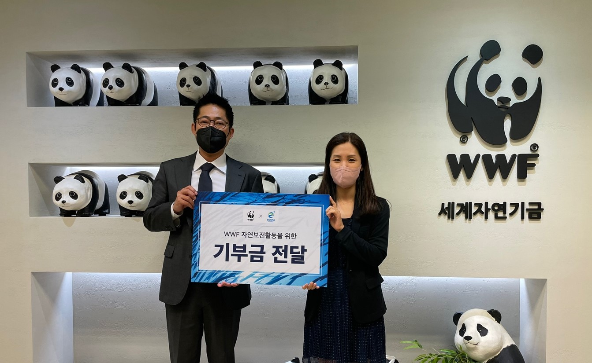
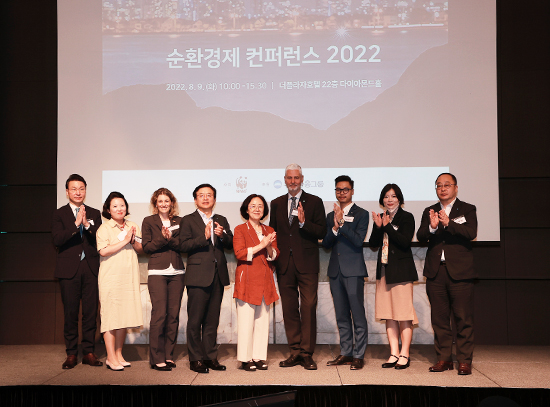

최신 소식
-

21 Sep 2022
WWF-은하수산,자연보전을 위한 기부
금...www(세계자연기금)는 지난 9월15일 은하수산과
함께 자연보전활동을 위한 기부금 전달식을 진행했...
-
17 Aug 2022
우크라이나 전쟁에 뜨거워지는 식물성
기름 ...By:Kamal Prakash Seth, Global Palm Oil Lead,
WWF-우크라이나 전쟁으로 농산물 가격 전례없이...
-

12 Aug 2022
WWF,8월9일 순환경제 컨퍼런스 성
공...-WWF,8월9일 국내외 각 분야 전문가를 연사로
초청하여 순환경제를 주제로 컨퍼런스 개최- 순환...